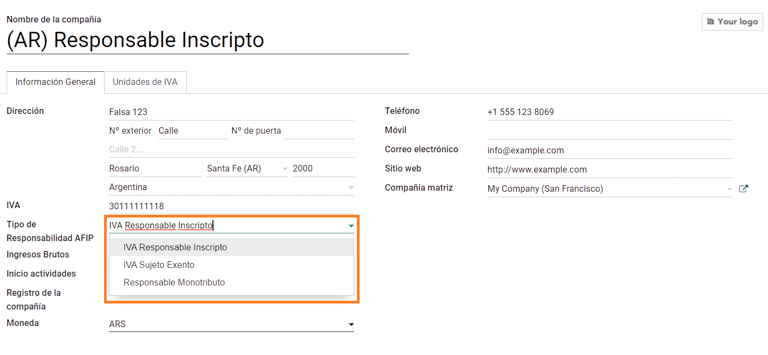
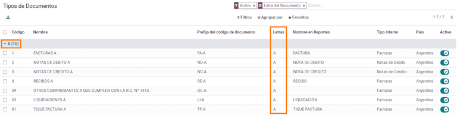
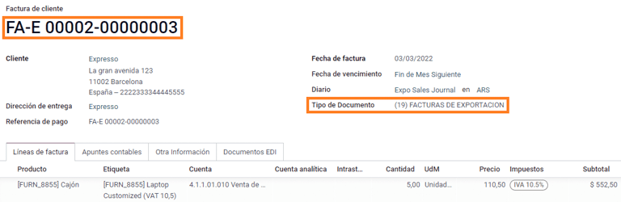
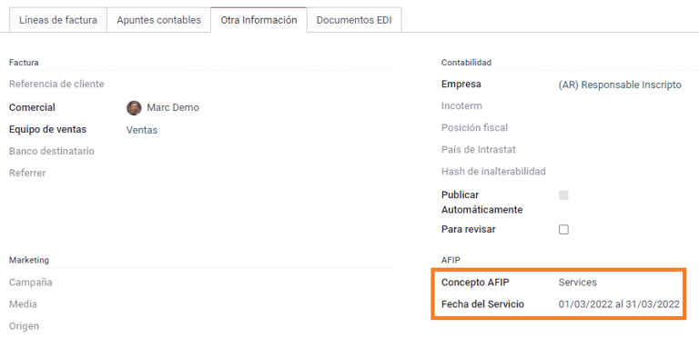
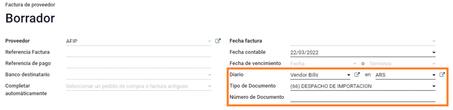
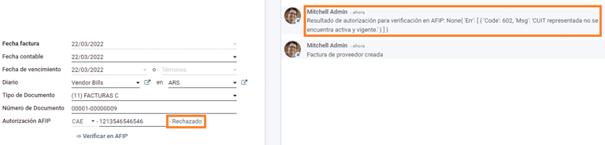

อาร์เจนตินา¶
การสัมมนาผ่านเว็บ¶
ด้านล่างนี้คุณสามารถหาวิดีโอเกี่ยวกับคำอธิบายทั่วไปเกี่ยวกับการแปล,และจะกำหนดค่าอย่างไร
การสัมมนาผ่านเว็บ - ท้องถิ่นในอาร์เจนตินา< https://www.youtube.com/watch?v=_H1HbU -wKVg>`_。
`อีคอมเมิร์ซ - การแปลในอาร์เจนตินา< https://www.youtube.com/watch?v=5gUi2WWfRuI >`_.
See also
สมาร์ทกวดวิชา - การแปลในอาร์เจนตินา< https://www.odoo.com/slides/smart-tutorial-localizacion-de-argentina-130 >`_
การกำหนดค่า¶
การติดตั้งโมดูล¶
:ref:` ติดตั้ง <general / Install>` โมดูลต่อไปนี้เพื่อรับทั้งหมดคุณสมบัติของการแปลในอาร์เจนตินา:
ชื่อ-นามสกุล |
ชื่อทางเทคนิค |
คำแนะนำ |
|---|---|---|
:guilabel:` อาร์เจนตินา - บัญชี ` |
|
ค่าเริ่มต้น: อ้าง:` แพคเกจการแปลทางการคลัง <การแปลทางการคลัง / แพ็คเกจ> `,ซึ่งแสดงถึงการกำหนดค่าขั้นต่ำในการดำเนินงานในอาร์เจนตินา: ย่อ: "AFIP (รัฐบาลกลาง)" ระเบียบและแนวทาง |
:guilabel:` รายงานบัญชีอาร์เจนตินา |
|
รายงานสมุดบัญชีภาษีมูลค่าเพิ่ม และรายงานสรุปภาษีมูลค่าเพิ่ม |
:guilabel:`อาร์เจนตินา e-Invoice |
|
รวมถึงข้อกำหนดทางเทคนิคและฟังก์ชั่นทั้งหมดสำหรับการสร้างไฟล์อิเล็กทรอนิกส์การออกใบแจ้งหนี้ผ่านบริการเว็บตามระเบียบ AFIP |
Argentina e-commerce |
`l10n_ar _ เว็บไซต์ _ ขาย ` |
(อุปกรณ์เสริม) ช่วยให้ผู้ใช้สามารถดูประเภทบัตรประจำตัวและ AFIPความรับผิดชอบใน e-Commerce Checkout Form เพื่อสร้าง e-Commerceใบแจ้งหนี้ |
กำหนดค่าบริษัทของคุณ¶
หลังจากติดตั้งโมดูลโลคัลไลเซชันแล้วขั้นตอนแรกคือการตั้งค่าข้อมูลของบริษัท กรอกข้อมูลสำคัญนอกเหนือจากข้อมูลพื้นฐานใน: guilabel: "ประเภทของความรับผิดชอบ AFIP" ซึ่งย่อมาจากการเงินภาระหน้าที่และโครงสร้างของบริษัท
รายการบัญชี¶
ในการบัญชีมีสามแตกต่างกัน: guilabel: รายการบัญชี `กระเป๋าที่มีให้เลือก พวกเขาขึ้นอยู่กับความรับผิดชอบของ AFIP ของ บริษัทประเภทและคำนึงถึงความแตกต่างระหว่าง บริษัท ที่ไม่พึงประสงค์หลายบัญชีถือว่าเป็น บริษัท ที่มีความต้องการทางการเงินที่ซับซ้อนมากขึ้น:
Monotributista (227 บัญชี);
IVA Exento (290 บัญชี);
จารึกความรับผิดชอบ (298 บัญชี)

กำหนดค่าข้อมูลหลัก¶
บัตรกำนัล e-Invoice¶
สิ่งแวดล้อม¶
โครงสร้างพื้นฐาน AFIP ถูกคัดลอกในสองสภาพแวดล้อมที่แยกจากกัน** การทดสอบ ** และ ** การผลิต **
การทดสอบมีไว้เพื่อให้ บริษัท สามารถทดสอบฐานข้อมูลของพวกเขาจนกระทั่งพวกเขาพร้อมที่จะเข้าสู่ ** การผลิต ** สิ่งแวดล้อม เพราะทั้ง 2 คนนี้สภาพแวดล้อมถูกแยกออกจากกันอย่างสมบูรณ์ตัวเลขใบรับรองสำหรับอินสแตนซ์หนึ่งไม่ถูกต้องสำหรับอีกอินสแตนซ์
ในการเลือกสภาพแวดล้อมฐานข้อมูลไปที่: menusesection:`Accounting-->การตั้งค่า -> การแปลในอาร์เจนตินาแล้วเลือกหนึ่งในนั้น: guilabel: Prueba(ทดสอบ) หรือ: guilabel: การผลิต (การผลิต)

ใบรับรอง AFIP¶
ใบแจ้งหนี้อิเล็กทรอนิกส์และบริการ AFIP อื่น ๆ ที่ใช้: guilabel:`Webบริการ (WS) โดย AFIP
เพื่อให้สามารถสื่อสารกับ AFIP ได้ โดยขั้นตอนแรกคือการขอa: guilabel: "ใบรับรองดิจิตอล" ถ้าคุณยังไม่ได้
:guilabel:` สร้างคำขอลายเซ็นใบรับรอง (Odoo)` เมื่อตัวเลือกนี้คือเมื่อเลือกแล้วจะมีไฟล์ที่มีนามสกุล ".csr" (คำขอลายเซ็นใบรับรอง) ปรากฏขึ้นสร้างขึ้นเพื่อใช้ในพอร์ทัล AFIP เพื่อขอใบรับรอง

สร้างใบรับรอง (AFIP). เข้าถึงพอร์ทัล AFIP และติดตามคำอธิบายที่อธิบายไว้ในเอกสารนี้< https://drive.google.com/file/d/17OKX2lNWd1bjUt3NxfqcCKBkBh-Xlpo-/ ดู>`_เพื่อขอรับใบรับรอง
:guilabel:` อัพโหลดใบรับรองและคีย์ส่วนตัว (Odoo)` เมื่อใบรับรองแล้วเมื่อสร้างแล้วอัพโหลดไปยัง Odoo โดยใช้ไอคอน Guilabel: "เพนซิล"ฟิลด์: guilabel:
Certificadoจากนั้นเลือกไฟล์ที่เกี่ยวข้อง
Tip
หากคุณต้องการกำหนดค่าใบรับรองการรับรองโปรดดูที่AFIP เอกสารอย่างเป็นทางการ: "ใบรับรองการรับรอง< http://www.afip.gob.ar/ws/documentacion/certificados.asp >`_. นอกจากนี้Odoo ช่วยให้ผู้ใช้ทดสอบใบแจ้งหนี้อิเล็กทรอนิกส์ในพื้นที่โดยไม่ต้องใบรับรองการรับรอง ข้อความต่อไปนี้จะปรากฏในการแชทการทดสอบในท้องถิ่น:

คู่หู¶
ประเภทโลโก้และภาษีมูลค่าเพิ่ม¶
ประเภทของเอกสารที่กำหนดโดย AFIP ซึ่งเป็นส่วนหนึ่งของการแปลในอาร์เจนตินาตอนนี้สามารถพบได้ใน ** แบบฟอร์มพันธมิตร** ข้อมูลเป็นสิ่งจำเป็นสำหรับคนส่วนใหญ่ข้อตกลง มีหกประเภท: guilabel: "ประเภทโลโก้"ค่าเริ่มต้นและ 32 ประเภทที่ไม่ได้ใช้งาน

Note
รายการทั้งหมดของ "ประเภทการระบุ" ถูกกำหนดโดย AFIP: guilabel: มีดังนี้รวมอยู่ใน Odoo แต่เฉพาะทั่วไปเท่านั้นที่ใช้งานได้
ประเภทความรับผิดชอบของ AFIP¶
ในอาร์เจนตินาประเภทเอกสารที่เกี่ยวข้องและธุรกรรมที่เกี่ยวข้องความสัมพันธ์กับลูกค้าและซัพพลายเออร์ถูกกำหนดโดยประเภทความรับผิดชอบของ AFIP นี่ฟิลด์ควรจะกำหนดไว้ใน ** แบบฟอร์มพันธมิตร **

ภาษี¶
ในฐานะที่เป็นส่วนหนึ่งของโมดูล Localization ภาษีจะถูกสร้างขึ้นโดยอัตโนมัติโดยบัญชีการเงินที่เกี่ยวข้องและการกำหนดค่าตัวอย่างเช่นภาษี 73 รายการ: guilabel: "จารึกด้วยความรับผิดชอบ"

ประเภทของภาษี¶
มีภาษีหลายประเภทในอาร์เจนตินาซึ่งพบมากที่สุดคือ:
: guilabel: "VAT": นี่คือภาษีมูลค่าเพิ่มปกติสามารถมีเปอร์เซ็นต์ต่างๆ;
: guilabel: "การรับรู้": การชำระภาษีล่วงหน้าใช้กับวัตถุต่อไปนี้ใบแจ้งหนี้;
guilabel: "ฝาก": ภาษีที่ใช้บังคับกับการชำระเงินล่วงหน้า
ภาษีพิเศษ¶
ภาษีบางส่วนในอาร์เจนตินาไม่สามารถใช้ได้กับทุกบริษัทโดยค่าเริ่มต้นตัวเลือกที่ไม่ค่อยพบจะถูกทำเครื่องหมายว่าไม่มีการใช้งานใน Odoo ก่อนการสร้างภาษีใหม่ต้องตรวจสอบว่ายังไม่รวมภาษีหรือไม่ไม่คึกคัก

ประเภทของเอกสาร¶
ในบางประเทศในละตินอเมริกา เช่น อาร์เจนตินา นักบัญชีบางคนรายการต่างๆ เช่น ใบแจ้งหนี้ และใบเรียกเก็บเงินจากผู้ขาย จำแนกตามเอกสารประเภทที่กระทรวงการคลังของรัฐบาลกำหนด ในอาร์เจนตินา`AFIP< https://www.afip.gob.ar/ > `___ เป็นหน่วยงานการคลังของรัฐบาลซึ่งกำหนดให้การทำธุรกรรมดังกล่าว
ประเภทของเอกสารเป็นข้อความที่จำเป็นและจำเป็นต้องแสดงอย่างชัดเจนในรายงานการพิมพ์ใบแจ้งหนี้และรายการบันทึกประจำวันบัญชีรายชื่อย้าย
เอกสารแต่ละประเภทสามารถมีลำดับที่ไม่ซ้ำกันในแต่ละไดอารี่การจัดสรร ในฐานะที่เป็นส่วนหนึ่งของการแปลภาษาเอกสารประเภทรวมถึงประเทศที่มีแฟ้ม ( สร้างข้อมูลนี้อัตโนมัติเมื่อติดตั้งโมดูลตำแหน่ง)
: guilabel: ข้อมูลที่จำเป็นสำหรับ "ประเภทเอกสาร" รวมอยู่ในโดยค่าเริ่มต้นผู้ใช้ไม่จำเป็นต้องกรอกข้อมูลในมุมมองนี้:

Note
มีหลายประเภท: guilabel: "ประเภทเอกสาร" ไม่ได้ใช้งานเมื่อการตั้งค่าเริ่มต้น แต่สามารถเปิดใช้งานได้ตามต้องการ
จดหมาย¶
สำหรับอาร์เจนตินา: guilabel: "ประเภทไฟล์" รวมถึงจดหมายที่จะช่วยให้ระบุประเภทของการซื้อขายหรือการดำเนินการ ยกตัวอย่างเช่น เมื่อใบแจ้งหนี้เกี่ยวข้องกับ a(n):
: guilabel: "ธุรกรรม B2B", ประเภทของเอกสาร: guilabel: "a" ต้องใช้;
: guilabel: "การซื้อขาย B2C", ต้องใช้เอกสารประเภท: guilabel: "B";
: guilabel: "Export Transaction", ประเภทเอกสาร: guilabel: "E" ต้องเป็นการใช้
ไฟล์ที่รวมอยู่ในการแปลมีตัวอักษรที่ถูกต้องอยู่แล้วความสัมพันธ์กับแต่ละ: guilabel: "ประเภทเอกสาร" จึงไม่มีอะไรเพิ่มเติมการกำหนดค่าเป็นสิ่งจำเป็น
ใช้ในใบแจ้งหนี้¶
สำหรับแต่ละธุรกรรม: guilabel: "ประเภทเอกสาร" จะถูกกำหนดโดย:
รายการบันทึกประจำวันที่เกี่ยวข้องกับใบแจ้งหนี้ (ถ้าบันทึกประจำวันใช้เอกสาร);
เงื่อนไขที่ใช้บังคับตามประเภทของผู้ออกและผู้รับ (เช่นประเภทของระบบการเงินของผู้ซื้อเทียบกับผู้ขาย)
การขายวารสาร¶
ในแง่ของการแปลในอาร์เจนตินานิตยสารสามารถใช้วิธีการที่แตกต่างกันขึ้นอยู่กับวัตถุประสงค์และประเภทการตกแต่งภายในของมัน หากต้องการกำหนดค่าบันทึกประจำวันให้ไปที่: เมนู: "การบัญชี -> การกำหนดค่า -> บันทึกประจำวัน"
สำหรับบันทึกการขายและการจัดซื้อตัวเลือกนี้สามารถเปิดใช้งานได้: guilabel: "ใช้เอกสาร", อนุญาตให้ใช้: guilabel: "เอกสาร" รายการประเภทที่สามารถเกี่ยวข้องกับใบแจ้งหนี้และการเรียกเก็บเงินของผู้ขาย ดูรายละเอียดเพิ่มเติมสำหรับใบแจ้งหนี้ โปรดดูที่ส่วน 2.3 "ประเภทไฟล์"<ประเภทของเอกสาร>
หากบันทึกการขายหรือการจัดซื้อไม่ได้: guilabel: `ใช้เอกสาร`หากตัวเลือกถูกเปิดใช้งาน พวกเขาจะไม่สามารถสร้างใบแจ้งหนี้ทางการเงินได้ซึ่งหมายความว่ากรณีการใช้งานของพวกเขาจะถูก จำกัด เป็นหลักในการตรวจสอบการเคลื่อนไหวของบัญชีเกี่ยวข้องกับกระบวนการควบคุมภายใน
ข้อมูล AFIP (หรือที่เรียกว่าจุดขาย AFIP)¶
: guilabel: "AFIP POS System" เป็นฟิลด์ที่มองเห็นได้เฉพาะการขาย **บันทึกประจำวันและกำหนดประเภทที่จะใช้ในการจัดการ AFIP POSการทำธุรกรรมเพื่อสร้างบันทึกประจำวัน
AFIP POS ถูกกำหนดดังนี้:
ลำดับของประเภทเอกสารที่เกี่ยวข้องกับบริการเว็บ
โครงสร้างและข้อมูลของเอกสารใบแจ้งหนี้อิเล็กทรอนิกส์

บริการเว็บ¶
** บริการเว็บ ** ช่วยสร้างใบแจ้งหนี้เพื่อวัตถุประสงค์ที่แตกต่างกัน นี่คือ aมีหลายตัวเลือกให้เลือก:
: guilabel:
wsfev1: e-Invoice: เป็นบริการที่พบมากที่สุดใช้สำหรับสร้างใบแจ้งหนี้สำหรับเอกสารประเภท A, B, C, M โดยไม่มีรายละเอียดรายการ;: guilabel: "wsbfev1: พันธบัตรการเงินอิเล็กทรอนิกส์": สำหรับผู้ที่ออกใบแจ้งหนี้สินค้าทุน และสิทธิประโยชน์ที่ประสงค์จะเข้าถึงพันธบัตรภาษีอิเล็กทรอนิกส์โดยความเห็นชอบของกระทรวงเศรษฐกิจ ดูรายละเอียดเพิ่มเติมได้ที่ "พันธบัตรการคลัง"< https://www.argentina.gob.ar/acceder-un-bono-por-fabricar-bienes-de-เงินทุน > _;
:guilabel:`wsfexv1: ใบแจ้งหนี้การส่งออกอิเล็กทรอนิกส์ใบแจ้งหนี้ที่เกี่ยวข้องกับลูกค้าและธุรกรรมระหว่างประเทศในกระบวนการส่งออกที่เกี่ยวข้องกับประเภทของเอกสารคือประเภท #.

ต่อไปนี้เป็นฟิลด์ที่มีประโยชน์บางอย่างที่คุณต้องรู้เมื่อใช้บริการเว็บ:
: guilabel:
AFIP POS number: เป็นหมายเลขที่กำหนดค่าใน AFIP สำหรับระบุการกระทำที่เกี่ยวข้องกับ AFIP POS นี้:guilabel:`AFIP POS address':ฟิลด์ที่เกี่ยวข้องกับที่อยู่ธุรกิจPOS นี้มักจะเป็นที่อยู่เดียวกันกับ บริษัทตัวอย่างเช่นหาก บริษัท มีร้านค้าหลายแห่ง (ที่ตั้งทางการเงิน) แล้วAFIP จะกำหนดให้บริษัทติดตั้ง AFIP POS ในแต่ละสถานที่ นี่สถานที่จะถูกพิมพ์ในรายงานใบแจ้งหนี้
: guilabel: "Unified Book": เมื่อระบบ AFIP POS เป็น Preimprasaประเภทของเอกสารที่มีตัวอักษรเดียวกัน (สำหรับสมุดบันทึกประจำวัน) จะถูกแบ่งปันลำดับเดียวกัน ตัวอย่าง:
ใบแจ้งหนี้: FA-A 0001-0000002;
หมายเหตุเครดิต: NC-A 0001-0000003;
สลิปการหักบัญชี: ND-A 0001-0000004
ลำดับ¶
สำหรับใบแจ้งหนี้ใบแรก Odoo จะซิงค์กับ AFIP โดยอัตโนมัติแสดงลำดับการใช้งานล่าสุด
Note
เมื่อสร้าง: guilabel: `ซื้อวารสาร' สามารถกำหนดได้หรือไม่ไม่ว่าจะเกี่ยวข้องกับประเภทของเอกสารหรือไม่ หากเลือกหากเลือกใช้เอกสารคุณไม่จำเป็นต้องเชื่อมโยงด้วยตนเองลำดับประเภทเอกสารเนื่องจากหมายเลขเอกสารประกอบด้วยจ่าฝูง
การใช้งานและการทดสอบ¶
สหภาพใบแจ้งหนี้¶
ข้อมูลต่อไปนี้ใช้กับคู่ค้าและบันทึกถูกสร้างขึ้นและกำหนดค่าอย่างถูกต้อง
การกำหนดประเภทเอกสาร¶
หลังจากเลือกพันธมิตรแล้ว: guilabel: "ประเภทเอกสาร" ฟิลด์จะเป็นกรอกข้อมูลโดยอัตโนมัติตามประเภทเอกสาร AFIP:
** คำจารึกความรับผิดของใบแจ้งหนี้ของลูกค้า IVA พร้อมคำนำหน้า A ** เป็นประเภทเอกสารแสดงรายละเอียดภาษีทั้งหมดและของลูกค้าข้อมูล

** ใบแจ้งหนี้ของลูกค้าปลายทาง คำนำหน้า B ** หมายถึงไม่ได้ลงรายละเอียดเรื่องภาษี เพราะภาษีได้รวมอยู่ในยอดรวมแล้ว

** ใบกำกับการส่งออก (Export Invoice) โดยมีคำนำหน้าว่า E** เป็นประเภทเอกสารที่ใช้ในกรณีดังต่อไปนี้การส่งออกสินค้าโภคภัณฑ์ที่แสดงระยะการค้าระหว่างประเทศ

แม้ว่าใบแจ้งหนี้บางใบจะใช้สมุดบันทึกประจำวันเดียวกัน แต่คำนำหน้าและลำดับคือได้รับจาก: guilabel: ฟิลด์ "ประเภทเอกสาร"
ที่พบมากที่สุด: guilabel: "ประเภทเอกสาร" จะถูกกำหนดโดยอัตโนมัติชุดค่าผสมที่แตกต่างกันของประเภทความรับผิดชอบ AFIP แต่สามารถอัปเดตได้ผู้ใช้ดำเนินการด้วยตนเองก่อนที่จะยืนยันใบแจ้งหนี้
องค์ประกอบใบแจ้งหนี้อิเล็กทรอนิกส์¶
เมื่อใช้ e-Invoice ถ้าข้อมูลทั้งหมดถูกต้องใบแจ้งหนี้จะถูกโพสต์ในลักษณะมาตรฐานเว้นแต่มีข้อผิดพลาดที่ต้องโพสต์ได้รับการแก้ไข เมื่อข้อความแสดงข้อผิดพลาดปรากฏขึ้นพวกเขาระบุปัญหาต้องให้ความสนใจและเสนอแนวทางแก้ไข หากความผิดพลาดยังมีอยู่ใบแจ้งหนี้ยังคงร่างไว้จนกว่าปัญหาจะคลี่คลาย
ข้อมูลที่เกี่ยวข้องกับการตรวจสอบ AFIP หลังจากการออกใบแจ้งหนี้สถานะจะปรากฏในแท็บ AFIP รวมถึง:
: guilabel:
AFIP Autorisation: หมายเลข CAE;: guilabel: "วันหมดอายุ": ส่งใบแจ้งหนี้ให้กับลูกค้า (ปกติ 10 วันหลังจากสร้าง CAE);
:guilabel:`ผล:`หมายความว่าใบแจ้งหนี้มีอยู่แล้ว:guilabel:`Aceptado enAFIP" และ / หรือ: guilabel: "Aceptado con Observations".

ภาษีใบแจ้งหนี้¶
ตาม: guilabel: "ประเภทของความรับผิดชอบ AFIP" สามารถยื่นขอภาษีมูลค่าเพิ่มได้ความแตกต่างในรายงาน PDF:
: guilabel: "A. ไม่รวมภาษี": ในกรณีนี้จำนวนเงินที่ต้องเสียภาษีจะต้องเป็นในรายงานระบุไว้อย่างชัดเจน เมื่อลูกค้ามีประเภทความรับผิด AFIP ต่อไปนี้ ** จารึกความรับผิด **

: guilabel: "B. จำนวนภาษีรวม": หมายความว่าจำนวนภาษีคือรวมอยู่ในราคาสินค้าผลรวมย่อยและยอดรวม กรณีนี้ใช้เมื่อลูกค้ามีความรับผิด AFIP ประเภทต่อไปนี้:
IVA Sujeto Exento；
ผู้บริโภคขั้นสุดท้าย;
การบริจาคที่มีความรับผิดชอบ
อิสรภาพของไอวีเอ
กรณีการใช้งานพิเศษ¶
ใบแจ้งหนี้บริการ¶
สำหรับใบแจ้งหนี้อิเล็กทรอนิกส์ที่มี: guilabel: "บริการ", ข้อกำหนด AFIPหากต้องการรายงานวันเริ่มต้นและสิ้นสุดการให้บริการ คุณสามารถใช้ข้อมูลดังต่อไปนี้กรอกข้อมูลในแท็บ: guilabel: "ข้อมูลเพิ่มเติม"
หากไม่มีการเลือกวันด้วยตนเองก่อนการตรวจสอบใบแจ้งหนี้วันแรกและวันสุดท้ายที่ค่าจะถูกเติมโดยอัตโนมัติเดือนของใบแจ้งหนี้

ใบกำกับการส่งออก¶
ใบแจ้งหนี้ที่เกี่ยวข้องกับ: guilabel: ข้อกำหนดสำหรับ "ธุรกรรมการส่งออก"วารสารใช้ระบบ AFIP POS ** Voucher Expo - Web Service** เพื่อประเภทของเอกสารที่เหมาะสมสามารถเชื่อมโยงกันได้

เมื่อลูกค้าที่เลือกในใบแจ้งหนี้ได้กำหนดค่า AFIPประเภทความรับผิดชอบ: guilabel: ลูกค้า / หลักฐานภายนอก '-: guilabel: `Ley N ° 19.640, Odoo แจกจ่ายอัตโนมัติ:
วารสารที่เกี่ยวข้องกับบริการเว็บส่งออก
ประเภทของเอกสารการส่งออก
สถานะทางการเงิน: คอมเพรสเซอร์ / พัดลมระบายอากาศภายนอก
แนวคิด AFIP: การส่งออกผลิตภัณฑ์ / สินค้าขั้นสุดท้าย
ยกเว้นภาษี

Note
เอกสารการส่งออกต้องเปิดใช้งานและกำหนดค่า Incotermsคุณสามารถพบได้ในเมนูต่อไปนี้: "ข้อมูลเพิ่มเติม -> การบัญชี"

พันธบัตรการคลัง¶
: guilabel: "พันธบัตรทางการเงินอิเล็กทรอนิกส์" สำหรับผู้ออกใบแจ้งหนี้ทุนสินค้า และสิทธิประโยชน์ที่ประสงค์จะได้รับจากพันธบัตรภาษีอิเล็กทรอนิกส์ที่ได้รับจากกระทรวงเศรษฐกิจ
สำหรับธุรกรรมเหล่านี้เป็นสิ่งสำคัญที่จะต้องพิจารณาปัจจัยต่อไปนี้ความต้องการ:
สกุลเงิน (ตามตารางพารามิเตอร์) และใบแจ้งราคาสินค้า
ภาษี;
ภูมิภาค;
รายละเอียดแต่ละรายการ
รหัสที่ตั้งชื่อร่วมกันตาม Mercosur Markets (NCM);
คำอธิบายที่สมบูรณ์;
ราคาสุทธิต่อหน่วย
ปริมาณ
หน่วยวัด;
โบนัส;
อัตราภาษีมูลค่าเพิ่ม
ใบแจ้งหนี้เครดิตอิเล็กทรอนิกส์ MiPyme (FCE)¶
สำหรับใบแจ้งหนี้ SME มีเอกสารหลายประเภทที่สามารถแบ่งได้เป็น**MiPyME** หรือที่เรียกว่า ** ใบแจ้งหนี้เครดิตอิเล็กทรอนิกส์ ** (หรือ**FCE ** (ภาษาสเปน) การจำแนกประเภทนี้ได้พัฒนากลไกในการปรับปรุงเงื่อนไขทางการเงินสำหรับผู้ประกอบการ SMEs และอนุญาตให้เพิ่มผลผลิตด้วยการรวบรวมเครดิตในช่วงต้นและลูกหนี้ที่ออกให้แก่ลูกค้าและ/หรือซัพพลายเออร์
สำหรับธุรกรรมเหล่านี้เป็นสิ่งสำคัญที่จะต้องพิจารณาปัจจัยต่อไปนี้ความต้องการ:
ประเภทเอกสารเฉพาะ (201, 202, 206 ฯลฯ );
เครื่องส่งสัญญาณควรมีคุณสมบัติในการทำธุรกรรม AFIP กับ MiPyME
จำนวนเงินที่ควรจะมากกว่า 100,000 ARS;
ประเภทบัญชีธนาคาร CBU จะต้องเกี่ยวข้องกับการปล่อยมลพิษมิฉะนั้นใบแจ้งหนี้ไม่สามารถตรวจสอบได้และแสดงข้อความแสดงข้อผิดพลาดต่อไปนี้

การตั้งค่า: guilabel: "โหมดการถ่ายโอน" ไปที่การตั้งค่าและเลือกหรือ: guilabel: "SDC" หรือ: guilabel: "ADC"

หากต้องการเปลี่ยนใบแจ้งหนี้ที่ระบุ: guilabel: "โหมดการถ่ายโอน" โปรดไปที่ใน: guilabel: "ข้อมูลเพิ่มเติม" แท็บทำการเปลี่ยนแปลงก่อนที่จะยืนยัน
Note
การเปลี่ยนแปลง: guilabel: "โหมดการถ่ายโอน" จะไม่เปลี่ยนโหมดที่เลือกใน: guilabel: setting

เมื่อสร้างตั๋วที่เกี่ยวข้องกับเอกสาร FCE: guilabel: "เครดิต / เดบิต":
ใช้: guilabel: "เครดิตและบัตรเดบิต" ปุ่มดังนั้นข้อมูลทั้งหมดโอนจากใบแจ้งหนี้ไปใหม่: guilabel: `เครดิตและเดบิตหมายเหตุ `;
จดหมายเอกสารควรเป็นเอกสารเดียวกับเอกสารของผู้ริเริ่ม(A หรือ B);
ต้องใช้สกุลเงินเดียวกับเอกสารต้นทาง เมื่อใช้ aสกุลเงินรอง ถ้าอัตราแลกเปลี่ยนเป็นวันที่ปล่อยและวันจ่ายจะแตกต่างกัน มีความเป็นไปได้จัดทำสลิปเครดิต / เดบิตเพื่อลด / เพิ่มจำนวนการชำระเงินใน ARS

เมื่อสร้าง: guilabel: "Credit Slip" เราสามารถมีสองกรณี:
FCE ถูกปฏิเสธดังนั้น: guilabel: "ตั๋วเครดิต" ควรมีฟิลด์นี้:guilabel:"FCE, คือการยกเลิก?" สำหรับ True; หรือ;
สร้าง: guilabel: "Credit Slip" คือการยกเลิกไฟล์ FCE ในฟิลด์ในตัวอย่างนี้: guilabel:` FCE คือการยกเลิก? ` ต้องเป็น * ว่างเปล่า *ผิด

รายงานการพิมพ์ใบแจ้งหนี้¶
นี้: guilabel: "รายงาน PDF" ที่เกี่ยวข้องกับใบแจ้งหนี้อิเล็กทรอนิกส์รหัสบาร์โค้ดที่ด้านล่างของรูปแบบที่ได้รับการยืนยันโดย AFIPหมายถึงหมายเลข CAE วันหมดอายุจะปรากฏเป็นตามที่กฎหมายกำหนด

การแก้ไขปัญหาและการตรวจสอบ¶
เพื่อวัตถุประสงค์ในการตรวจสอบและแก้ไขปัญหามีรายละเอียดข้อมูลเลขที่ใบแจ้งหนี้ที่ส่งไปยัง AFIP ก่อนหน้านี้หากต้องการดึงข้อมูลนี้โปรดเปิดใช้งาน: อ้าง:`developer mode<developer-รุ่น > `, จากนั้นไปที่: menusesection: เมนู "บัญชี" คลิกปุ่ม: guilabel: ปุ่ม "ใบแจ้งหนี้ที่ปรึกษา" ใน AFIP


ยังสามารถเรียกคืนหมายเลขสุดท้ายที่ใช้ใน AFIP เฉพาะประเภทไฟล์และหมายเลข POS เป็นข้อมูลอ้างอิงสำหรับปัญหาที่เป็นไปได้การประสานลำดับระหว่าง Odoo และ AFIP

การเรียกเก็บเงินของผู้ขาย¶
ตามบันทึกการจัดซื้อที่เลือกไว้สำหรับการเรียกเก็บเงินของผู้ขาย: guilabel: 'Document Type' คือต้องกรอกข้อมูล ค่านี้เป็น auto -เติมตามประเภทความรับผิดชอบ AFIP ของธนาคารผู้ออกบัตรและลูกค้า แต่สามารถเปลี่ยนแปลงได้หากต้องการ
: guilabel: ฟิลด์ "หมายเลขเอกสาร" ต้องลงทะเบียนด้วยตนเองรูปแบบจะถูกตรวจสอบโดยอัตโนมัติ อย่างไรก็ตาม หากรูปแบบเป็นไม่ถูกต้องจะแสดงข้อผิดพลาดของผู้ใช้ที่ระบุรูปแบบที่ถูกต้องซึ่งก็เป็นไปตามที่คาดการณ์ไว้

หมายเลขบิลผู้ขายมีโครงสร้างเหมือนกับลูกค้าใบแจ้งหนี้เว้นแต่ลำดับเอกสารจะถูกใช้โดยผู้ใช้รูปแบบต่อไปนี้: * คำนำหน้าไฟล์ - ตัวอักษร - หมายเลขไฟล์ *
ตรวจสอบหมายเลขการเรียกเก็บเงินของซัพพลายเออร์ใน AFIP¶
เนื่องจาก บริษัท ส่วนใหญ่มีการควบคุมภายในเพื่อตรวจสอบการเรียกเก็บเงินของผู้ขายที่เกี่ยวข้องกับเอกสารที่ถูกต้อง AFIP การตรวจสอบอัตโนมัติสามารถตั้งค่าใน: menusesection:` การบัญชี -> การตั้งค่า -> การแปลในอาร์เจนตินา ->ตรวจสอบไฟล์ใน AFIP โดยพิจารณาจากระดับต่อไปนี้:
:guilabel:` ไม่สามารถใช้ได้:` การตรวจสอบยังไม่เสร็จสิ้น (นี่คือค่าเริ่มต้นค่า);
Available: the verification is done. In case the number is not valid, it only displays a warning but still allows the vendor bill to be posted;
Required: the verification is done, and it does not allow the user to post the vendor bill if the document number is not valid.

ตรวจสอบบิลผู้ขายใน Odoo¶
เมื่อเปิดใช้งานการตั้งค่าการตรวจสอบผู้ขายการเรียกเก็บเงินผู้ขายภายใน Odoo ภายใต้แท็ก: guilabel: "Verified on AFIP" นั่นคือตั้งอยู่ถัดจาก: guilabel: รหัสการอนุญาต AFIP

หากการเรียกเก็บเงินของผู้ขายไม่สามารถตรวจสอบได้ใน AFIP มูลค่าจะเป็น: guilabel: "ปฏิเสธ" จะปรากฏบนหน้าแดชบอร์ดโดยมีรายละเอียดดังนี้ความพ่ายแพ้จะถูกเพิ่มเข้าไปใน Vibrator
กรณีการใช้งานพิเศษ¶
แนวคิด Shaftless¶
ธุรกรรมบางอย่างประกอบด้วยการไม่ได้เป็นของฐานภาษีมูลค่าเพิ่ม เช่น ใบกำกับน้ำมันเชื้อเพลิงและน้ำมัน
ใบเรียกเก็บเงินผู้ขายจะใช้รายการใดรายการหนึ่งสำหรับแต่ละผลิตภัณฑ์ในการลงทะเบียนส่วนหนึ่งของจำนวนเงินฐานภาษีมูลค่าเพิ่มและรายการเพิ่มเติมที่จดทะเบียนในจำนวนนี้แนวคิดการยกเว้น

ภาษีการรับรู้¶
ใบเรียกเก็บเงินผู้ขายจะใช้รายการใดรายการหนึ่งสำหรับแต่ละผลิตภัณฑ์ในการลงทะเบียนส่วนหนึ่งของจำนวนเงินฐานภาษีมูลค่าเพิ่มภาษีการรับรู้สามารถเพิ่มใด ๆสายผลิตภัณฑ์ ดังนั้น ภาษีมูลค่าเพิ่มจะมีกลุ่มภาษีอีกอันหนึ่งคือการรับรู้ รับรู้ค่าเริ่มต้นเสมอ: Geebial: 0.10
เพื่อแก้ไขการรับรู้ภาษีมูลค่าเพิ่มและกำหนดจำนวนเงินที่เหมาะสมคุณควรใช้: guilabel: ไอคอน "ดินสอ" ตั้งอยู่ที่: guilabel: "การรับรู้"ปริมาณ. หลังจากตั้งค่าการรับรู้ภาษีมูลค่าเพิ่มใบแจ้งหนี้สามารถตรวจสอบแล้ว

การจัดการการตรวจสอบ¶
การติดตั้ง * บุคคลที่สามและการขยายเวลา / การจัดการเช็คอิเล็กทรอนิกส์ *โมดูลไปที่: menuselection: "Apps" และค้นหาโมดูลโดยพวกเขาชื่อทางเทคนิค "l10n_latam_check" และคลิก: guilabel: "เปิดใช้งาน" ปุ่ม

โมดูลนี้ช่วยให้การกำหนดค่าที่จำเป็นสำหรับบันทึกประจำวันและการชำระเงินเพื่อ:
สร้าง จัดการ และควบคุมเช็คประเภทต่างๆ
เพิ่มประสิทธิภาพ * เช็คส่วนตัว * และ * การจัดการเช็คของบุคคลที่สาม *
มีวิธีที่ง่ายและมีประสิทธิภาพในการจัดการวันหมดอายุของคุณเองการตรวจสอบบุคคลที่สาม
เมื่อการกำหนดค่าทั้งหมดของ e-Invoice ของอาร์เจนตินาเสร็จสมบูรณ์สตรีมและยังต้องทำการกำหนดค่าบางอย่างสำหรับตัวเองเช็คและกระแสเช็คของบุคคลที่สาม
เช็คของตัวเอง¶
โดยไปที่สมุดบันทึกของธนาคารที่มีการกำหนดค่าสำหรับการสร้างเช็คของคุณเอง: menusesection: "การบัญชี -> การกำหนดค่า -> บันทึกประจำวัน", เลือกสมุดบันทึกธนาคารและเปิด: guilabel: แท็บการชำระเงินขาออก
: guilabel: "เช็ค" ควรเป็น: guilabel: "วิธีการชำระเงิน" หากถ้าไม่ได้คลิกที่: guilabel: "เพิ่มบรรทัด" จากนั้นพิมพ์ "เช็ค" ใต้: guilabel: "ชำระเงิน"วิธีการเพิ่มพวกเขา
เปิดใช้งาน: guilabel: "การใช้อิเล็กทรอนิกส์และการตรวจสอบความล่าช้า" การตั้งค่า
Note
การกำหนดค่าล่าสุด ** ปิดการใช้งาน ** คุณลักษณะการพิมพ์ แต่อนุญาตให้:
กรอกหมายเลขเช็คด้วยตนเอง
เพิ่มฟิลด์เพื่อกำหนดวันจ่ายเช็ค

การจัดการการตรวจสอบตนเอง¶
สามารถสร้างเช็คของคุณเองได้โดยตรงจากการเรียกเก็บเงินของผู้ขาย สำหรับขั้นตอนนี้คลิกที่: guilabel: ปุ่ม "ลงทะเบียนการชำระเงิน"
ในโหมดลงทะเบียนชำระเงินให้เลือกสมุดบันทึกธนาคารการชำระเงินและการตั้งค่า: guilabel: "วันที่เช็คอิน" และ: guilabel: "จำนวนเงิน"

Note
ในการจัดการเช็คปัจจุบัน: guilabel: ฟิลด์ "วันที่เช็คเข้าทอง" ต้องเป็นเว้นว่างหรือกรอกวันที่ปัจจุบัน และเพื่อจัดการตรวจสอบความล่าช้า: guilabel: ต้องตั้งค่า "วันเข้าทอง" ในอนาคต
หากต้องการจัดการเช็คที่มีอยู่แล้วไปที่: menusesection:` การบัญชี--> ผู้จัดจำหน่าย --> ตรวจสอบด้วยตัวเอง หน้าต่างนี้แสดงข้อมูลสำคัญ เช่นวันที่ต้องจ่ายเช็ค จำนวนเช็คทั้งหมดยอดรวมของการจ่ายเช็ค

เป็นที่น่าสังเกตว่ารายชื่อได้รับการคัดกรองล่วงหน้าผ่านการตรวจสอบต่อไปนี้ยังไม่มีการแจ้งยอดบัญชีกับธนาคาร - ยังไม่มีการหักบัญชีจากธนาคาร - สามารถตรวจสอบได้โดย: guilabel: `ตรงกับ aใบแจ้งยอดบัญชีธนาคาร ฟิลด์ หากคุณต้องการตรวจสอบเช็คทั้งหมดของคุณโปรดลบ: guilabel: "no bank matching" filter, click: guilabel: "X"สัญลักษณ์

ยกเลิกเช็คของตัวเอง¶
หากต้องการยกเลิกเช็คที่สร้างขึ้นเองใน Odoo โปรดไปที่:menusesection:`Accounting --> Supplier --> Own Check' จากนั้นเลือกเช็คหากต้องการยกเลิกคลิกที่: guilabel: ปุ่มตรวจสอบไม่ถูกต้อง มันจะทำลายความปรองดองกับผู้ขายใบแจ้งหนี้และใบแจ้งยอดธนาคารและเก็บเช็คไว้ในสถานะ ** ยกเลิก **

การตรวจสอบบุคคลที่สาม¶
สำหรับการลงทะเบียนการชำระเงินโดยใช้เช็คของบุคคลที่สามมีสองเฉพาะบันทึกต้องมีการกำหนดค่า สำหรับสิ่งนี้โปรดไปที่:menusesection:`accounting-->configuration-->สมุดบันทึกประจำวัน'และสร้าง 2วารสารใหม่:
การตรวจสอบบุคคลที่สาม
'เช็คของบุคคลที่สามที่ถูกปฏิเสธ'
Note
หากคุณมีจุดขายหลายจุดคุณสามารถสร้างไดอารี่เพิ่มเติมได้ด้วยตนเองและจำเป็นต้องลงบันทึกประจำวันให้กับบุคคลเหล่านี้
ในการสร้างบันทึก "การตรวจสอบบุคคลที่สาม" คลิกที่: guilabel: "ใหม่" ปุ่มและกำหนดค่าต่อไปนี้:
พิมพ์ "การตรวจสอบบุคคลที่สาม" เป็น: guilabel: "ชื่อบันทึก"
เลือก: guilabel:
เงินสด' เป็น: guilabel: `ประเภทใน: guilabel: "รายการบันทึกประจำวัน" แท็บตั้งค่า: guilabel: "บัญชีเงินสด" เป็น:
1.1.1.02.010 เช็ค Terceros ป้อน a: guilabel: "รหัสย่อ" ของคุณเลือกแล้วเลือก a:guilabel:`currency

The available payment methods are listed in the payments tabs:
สำหรับเช็คของบุคคลที่สามที่ได้รับใหม่โปรดไปที่: menuselection:` การชำระเงินที่ได้รับแท็บ --> เพิ่มบรรทัดและเลือก: guilabel: "สร้างการตรวจสอบบุคคลที่สามใหม่" นี่ใช้วิธีการสร้างการตรวจสอบบุคคลภายนอกขึ้นมาใหม่
สำหรับเช็คของบุคคลที่สามที่มีอยู่ทั้งขาเข้าและขาออก กรุณาเยี่ยมชม: menusesection:` แท็บการชำระเงินขาเข้า -> เพิ่มบรรทัด และเลือก: guilabel: "การตรวจสอบบุคคลที่สามที่มีอยู่" ทำซ้ำขั้นตอนเดียวกัน: guilabel: แท็บ "ชำระเงินขาออก" วิธีนี้ใช้สำหรับรับและ / หรือชำระเงินการเรียกเก็บเงินของผู้ขายใช้เช็คที่มีอยู่แล้วและเช็คภายในโอนย้าย
Tip
ในกรณีต่อไปนี้คุณสามารถลบวิธีการชำระเงินที่มีอยู่ล่วงหน้าที่แสดงโดยค่าเริ่มต้นกำหนดค่าบันทึกการตรวจสอบของบุคคลที่สาม

จำเป็นต้องสร้างบันทึก "การตรวจสอบบุคคลที่สามที่ถูกปฏิเสธ" และ / หรือกำหนดค่าแล้ว บันทึกนี้จะใช้ในการจัดการเช็คของบุคคลที่สามที่ถูกปฏิเสธและสามารถใช้เพื่อส่งเช็คที่ถูกปฏิเสธ ณ เวลาที่รับเงินหรือเมื่อได้รับเมื่อถูกปฏิเสธ จากแม่ค้า
หากต้องการสร้างบันทึก "ปฏิเสธการตรวจสอบของบุคคลที่สาม" คลิก: guilabel: ปุ่ม "ใหม่" และกำหนดค่าต่อไปนี้:
พิมพ์ "ปฏิเสธการตรวจสอบของบุคคลที่สาม" เป็น: guilabel: "ชื่อบันทึก"
เลือก: guilabel:
เงินสด' เป็น: guilabel: `ประเภทใน: guilabel: "รายการบันทึกประจำวัน" แท็บตั้งค่า: guilabel: "บัญชีเงินสด" เป็น:`1.1.1.01.002 ปฏิเสธการตรวจสอบของบุคคลที่สามป้อน a:guilabel:`shortcode`คุณสามารถเลือกแล้วหนึ่ง: guilabel: `สกุลเงิน `
ใช้วิธีการชำระเงินแบบเดียวกับบันทึกประจำวันของ "เช็คของบุคคลที่สาม"
การตรวจสอบบุคคลที่สามใหม่¶
หากต้องการลงทะเบียนใบแจ้งหนี้ของลูกค้า * ใหม่ * เช็คของบุคคลที่สาม คลิก: guilabel: ปุ่ม "ลงทะเบียนเพื่อชำระเงิน" ในหน้าต่างป๊อปอัพคุณต้องเลือก: guilabel: "เช็คของบุคคลที่สาม" เป็นบันทึกประจำวันสำหรับการลงทะเบียนการชำระเงิน
เลือก: guilabel: "เช็คของบุคคลที่สามใหม่" เป็น: guilabel: "วิธีการชำระเงิน" และกรอกข้อมูล: guilabel: "หมายเลขเช็ค", guilabel: "วันที่ชำระเงิน", และ: guilabel: "ธนาคารเช็ค" คุณสามารถเลือกที่จะเพิ่มด้วยตนเอง:guilabel:` ตรวจสอบผู้ออกบัตร Vat` แต่มันเกิดจากหมายเลขภาษีมูลค่าเพิ่มของลูกค้าที่เกี่ยวข้องกับใบแจ้งหนี้

การตรวจสอบของบุคคลที่สามที่มีอยู่¶
หากต้องการชำระบิลผู้ขายด้วย * ที่มีอยู่ * เช็คคลิก: guilabel: `ลงทะเบียนปุ่มชำระเงิน ในหน้าต่างป๊อปอัพคุณต้องเลือก: guilabel:`Thirdการลงบันทึกประจำวันของพรรคเช็คส์ที่ลงทะเบียนไว้เป็นการจ่ายเงิน
เลือก: guilabel: ` เช็คของบุคคลที่สามที่มีอยู่ ' เป็น: guilabel: ` การชำระเงินวิธีการและเลือกช่องทำเครื่องหมายจาก: guilabel: 'ตรวจสอบ' ฟิลด์ เว็บไซต์แสดงเช็คที่มีอยู่ทั้งหมด ** ใช้เป็นการชำระเงินของผู้ขายบิล

เมื่อใช้ ** เช็คของบุคคลที่สามที่มีอยู่ ** คุณสามารถตรวจสอบได้การดำเนินการที่เกี่ยวข้องกับมัน ตัวอย่างเช่นคุณสามารถดูว่าบุคคลที่สามตรวจสอบหรือไม่ใบแจ้งหนี้ที่ทำขึ้นเพื่อชำระใบแจ้งหนี้ของลูกค้าถูกนำมาใช้ในภายหลังเป็นบุคคลที่สามที่มีอยู่ตรวจสอบเพื่อจ่ายบิลผู้ขาย
ในการดำเนินการนี้ โปรดไปที่: menusesection:accounting-->client-->thirdParty Check" หรือ: ส่วนเมนู: "บัญชี -> ผู้ขาย -> เช็คของตัวเองคลิกที่ช่องทำเครื่องหมายขึ้นอยู่กับสถานการณ์ ใน: guilabel: `ตรวจสอบปัจจุบันlog`field, click:guilabel: => ตรวจสอบการกระทำ` เปิดตรวจสอบประวัติและความเคลื่อนไหว

เมนูยังแสดงข้อมูลสำคัญที่เกี่ยวข้องกับการดำเนินการเหล่านี้,ตัวอย่าง:
: guilabel: "ประเภทการชำระเงิน", อนุญาตให้จำแนกประเภทของการชำระเงิน* ส่งไปยังซัพพลายเออร์หรือรับการชำระเงินจากลูกค้า
เช็คลงทะเบียนปัจจุบัน: guilabel: "ไดอารี่"
ที่เกี่ยวข้องกับการดำเนินงาน ** คู่ค้า ** (ลูกค้าหรือซัพพลายเออร์)
e-Invoice สำหรับอีคอมเมิร์ซ¶
:ref:` การติดตั้ง <general / Install>` อีคอมเมิร์ซในอาร์เจนตินา *(l10n_ar_website_sale) โมดูลเพื่อเปิดใช้งานฟังก์ชั่นต่อไปนี้และการกำหนดค่า:
ลูกค้าสามารถสร้างบัญชีออนไลน์เพื่อวัตถุประสงค์ในการทำอีคอมเมิร์ซได้
สนับสนุนฟิลด์ทางการเงินที่จำเป็นในแอปพลิเคชันอีคอมเมิร์ซ
รับชำระเงินสำหรับการสั่งซื้อสินค้าออนไลน์
สร้างเอกสารอิเล็กทรอนิกส์จากแอปพลิเคชันอีคอมเมิร์ซ
การกำหนดค่า¶
เมื่อมีการกำหนดค่าทั้งหมดสำหรับชาวอาร์เจนตินา: อ้างอิง: `อิเล็กทรอนิกส์ใบแจ้งหนี้ <อาร์เจนตินา / กำหนดค่า บริษัท ของคุณ> กระบวนการยังจำเป็นเสร็จสิ้นการกำหนดค่าบางอย่างเพื่อรวมกระบวนการอีคอมเมิร์ซ
การลงทะเบียนบัญชีลูกค้า¶
ในการกำหนดค่าเว็บไซต์ของคุณสำหรับบัญชีไคลเอ็นต์ทำตามคำแนะนำในthe:doc:` เช็คเอาท์<../../ เว็บไซต์ / อีคอมเมิร์ซ / เช็คเอาท์ _ การชำระเงิน _ การจัดส่ง / เช็คเอาท์ > `เอกสาร
ใบแจ้งหนี้อัตโนมัติ¶
กำหนดค่าเว็บไซต์ของคุณเพื่อสร้างเอกสารอิเล็กทรอนิกส์ในระหว่างการขายไปที่: menuseection:` เว็บไซต์ -> การกำหนดค่า -> การตั้งค่าและเปิดใช้งาน: guilabel: ฟังก์ชั่น "ใบแจ้งหนี้อัตโนมัติ": guilabel: ส่วน "ใบแจ้งหนี้" สำหรับการสร้างอัตโนมัติที่จำเป็นเอกสารอิเล็กทรอนิกส์เมื่อยืนยันการชำระเงินออนไลน์

เนื่องจากการชำระเงินออนไลน์ต้องการการยืนยัน: guilabel:` อัตโนมัติฟังก์ชั่นใบแจ้งหนี้สำหรับการสร้างเอกสาร a: doc:` ผู้ให้บริการชำระเงิน<../ payment_providers > ต้องกำหนดค่าสำหรับเว็บไซต์ที่เกี่ยวข้อง**
ผลิตภัณฑ์¶
เพื่อออกใบแจ้งหนี้สำหรับผลิตภัณฑ์ของคุณหลังจากยืนยันการชำระเงินออนไลน์นำทางไปยังผลิตภัณฑ์ที่ต้องการจาก: ส่วนเมนู: `เว็บไซต์ -> อีคอมเมิร์ซ--> ผลิตภัณฑ์ ใน: guilabel: "ข้อมูลทั่วไป" แท็บ, การตั้งค่า: guilabel: "นโยบายใบแจ้งหนี้" ถึง: guilabel: "ปริมาณการสั่งซื้อ" และกำหนดความคาดหวัง: guilabel: "ภาษีลูกค้า"
ขั้นตอนการออกใบแจ้งหนี้สำหรับอีคอมเมิร์ซ¶
เมื่อการกำหนดค่าข้างต้นได้รับการตั้งค่าทั้งหมดลูกค้าสามารถทำได้ป้อนขั้นตอนที่จำเป็นด้านล่างใน * อีคอมเมิร์ซในอาร์เจนตินา * กระบวนการเขตข้อมูลทางการเงินในกระบวนการชำระเงิน
ช่องบัญชีจะถูกป้อนในระหว่างขั้นตอนการชำระเงิน: guilabel: ฟิลด์ 'ประเทศ' ตั้งค่าเป็น 'อาร์เจนตินา' ป้อนข้อมูลทางการเงินทำให้การซื้อสามารถสิ้นสุดลงในเอกสารอิเล็กทรอนิกส์ที่สอดคล้องกัน

จำเป็นเมื่อลูกค้าซื้อและชำระเงินเรียบร้อยแล้วใบแจ้งหนี้สร้างขึ้นตามรูปแบบที่สอดคล้องกันและตราประทับทางการเงินใน: อ้าง: "รายงานการพิมพ์ใบแจ้งหนี้ <อาร์เจนตินา / รายงานการพิมพ์ใบแจ้งหนี้>"
See also
:doc:` การสร้างบัญชีลูกค้า<../../ เว็บไซต์ / อีคอมเมิร์ซ / เช็คเอาท์ _ การชำระเงิน _ การจัดส่ง / เช็คเอาท์ > `
การขายตรงสินค้าสภาพคล่อง¶
การขายตรงสินค้าสภาพคล่องเป็นการขายตรงที่มีบุคคลภายนอกเข้ามาเกี่ยวข้องสำหรับการขายดังกล่าวผู้ขายและ บริษัท ที่เป็นกรรมสิทธิ์ของสินค้าสามารถแต่ละลงทะเบียนการขายและการซื้อที่สอดคล้องกัน
Note
:ref:` การติดตั้ง <ทั่วไป / การติดตั้ง> ใบแจ้งหนี้อิเล็กทรอนิกส์อาร์เจนตินา *โมดูล (`l10n_ar_edi) ใช้คุณลักษณะนี้
การกำหนดค่า¶
สมุดบันทึกการจัดซื้อจัดจ้าง¶
ต้องจัดซื้อบันทึกประจำวันเพื่อสร้างการเรียกเก็บเงินผู้ขายอิเล็กทรอนิกส์ที่มีประเภทไฟล์ * ผลิตภัณฑ์สภาพคล่อง * ไดอารี่นี้ต้องซิงค์AFIP จะถูกใช้เพื่อสร้างสินค้าสภาพคล่องเอกสารอิเล็กทรอนิกส์
หากต้องการแก้ไขบันทึกการซื้อที่มีอยู่หรือสร้างบันทึกการซื้อใหม่ โปรดไปที่: เมนู: "การบัญชี -> การกำหนดค่า -> บันทึกประจำวัน" จากนั้นเลือกบันทึกการซื้อที่มีอยู่หรือคลิกที่: guilabel: ปุ่ม "ใหม่" กรอกข้อมูลที่จำเป็นต่อไปนี้:
type:select:guilabel:`ซื้อ
: guilabel: "ใช้เอกสาร": เลือกช่องนี้เพื่อเลือกประเภทเอกสารอิเล็กทรอนิกส์
: guilabel: "AFIP POS หรือไม่": ติ๊กช่องนี้เพื่อสร้างอิเล็กทรอนิกส์เอกสาร
AFIP POS system:เลือก:guilabel:`e-invoice - Webเลือก "บริการ" จากเมนูแบบเลื่อนลงเพื่อส่งเอกสารอิเล็กทรอนิกส์ไปยังAFIP ผ่านบริการเว็บ
: guilabel:
AFIP POS number: เป็นหมายเลขที่กำหนดค่าใน AFIP สำหรับระบุการกระทำที่เกี่ยวข้องกับ AFIP POS นี้:guilabel:`AFIP POS address':ฟิลด์ที่เกี่ยวข้องกับที่อยู่ธุรกิจPOS นี้มักจะเป็นที่อยู่เดียวกันกับ บริษัทตัวอย่างเช่นหาก บริษัท มีร้านค้าหลายแห่ง (ที่ตั้งทางการเงิน) แล้วAFIP จะกำหนดให้บริษัทติดตั้ง AFIP POS ในแต่ละสถานที่ นี่สถานที่จะถูกพิมพ์ในรายงานใบแจ้งหนี้

สมุดบันทึกการขาย¶
เมื่อสินค้าถูกขายให้ต้องมีสมุดบันทึกการขายเพื่อลงทะเบียนใบแจ้งหนี้บุคคลภายนอกก็จะขายสินค้าชนิดเดียวกันในภายหลัง บันทึกนี้จะไม่ประสานกับ AFIP เพราะใบแจ้งหนี้จะไม่ใช่ใบแจ้งหนี้อิเล็กทรอนิกส์
หากต้องการแก้ไขบันทึกการขายที่มีอยู่หรือสร้างบันทึกการขายใหม่ไปที่: เมนู: "การบัญชี -> การกำหนดค่า -> บันทึกประจำวัน" จากนั้นเลือกบันทึกการขายหรือคลิกที่: guilabel: ปุ่ม "ใหม่" และกรอกข้อมูลที่จำเป็นต่อไปนี้:
: guilabel: "ใช้เอกสาร": เลือกฟิลด์นี้ในสมุดบันทึกประจำวันเพื่อเลือกประเภทของเอกสารอิเล็กทรอนิกส์ (ในกรณีนี้คือใบแจ้งหนี้อิเล็กทรอนิกส์)

ขั้นตอนการออกใบแจ้งหนี้¶
เมื่อการกำหนดค่าเสร็จสมบูรณ์,*การเรียกเก็บเงินจากผู้ขายสินค้าสภาพคล่อง*จะถูกสร้างขึ้นในนามของ บริษัท ที่ขายสินค้าอีกฝ่าย ยกตัวอย่างเช่น ผู้จัดจำหน่ายสินค้าเฉพาะ
รายงาน¶
เป็นส่วนหนึ่งของการติดตั้งโลคัลไลเซชันรายงานทางการเงินของอาร์เจนตินาสามารถพบได้ใน: guilabel: แดชบอร์ด "บัญชี" การเข้าถึงเหล่านี้รายงานไปที่: ส่วนเมนู: `การบัญชี -> รายงาน ->อาร์เจนตินาพูด
หากต้องการเข้าถึงรายงานสมุดบัญชีภาษีมูลค่าเพิ่ม โปรดไปที่: เมนู: บัญชี -->ยื่น --> รายงานภาษี, คลิก: ไอคอน: "fa-book" (: guilabel: "book") ตามด้วยเลือก: guilabel:`หนังสือภาษีมูลค่าเพิ่มของอาร์เจนตินา (AR).
Note
คุณสามารถส่งออกเป็นไฟล์ ".zip" ได้โดยเลือกรายงานสมุดบัญชีภาษีมูลค่าเพิ่มเมนูแบบเลื่อนลงที่มุมบนซ้าย
สรุปภาษีมูลค่าเพิ่ม¶
ทั้งนี้ Pivot Table นี้มีวัตถุประสงค์เพื่อตรวจสอบยอดรวมภาษีมูลค่าเพิ่มในแต่ละเดือน รายงานฉบับนี้ใช้ภายในเท่านั้นจะไม่ส่งไปยัง AFIP
IIBB - ขายตามเขตอำนาจ¶
ตาราง Pivot นี้ช่วยให้คุณสามารถตรวจสอบรายได้รวมของแต่ละรายการเขตอำนาจศาล จะทำหน้าที่เป็นหนังสือรับรองการเสียภาษีที่ต้องชำระตาม แต่ไม่ได้ส่งให้ AFIP

IIBB - ซื้อตามเขตอำนาจ¶
Pivot Table นี้ช่วยให้คุณสามารถตรวจสอบปริมาณการซื้อทั้งหมดในแต่ละ Pivot Tableเขตอำนาจศาล จะทำหน้าที่เป็นหนังสือรับรองการเสียภาษีที่ต้องชำระตาม แต่ไม่ได้ส่งให้ AFIP